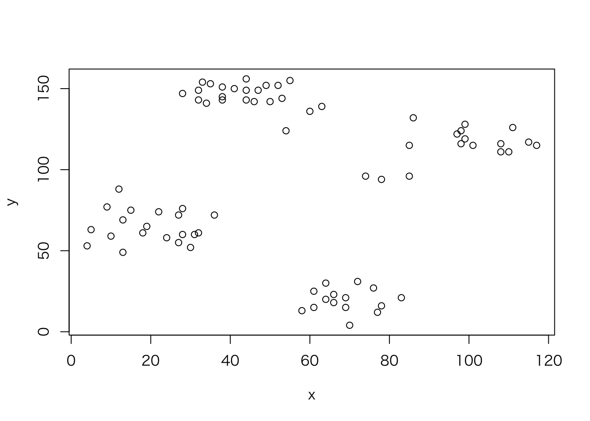

Section 4 学習器の訓練
学習器の訓練というのは要するにモデルをデータセットに適合させることだ。これにより学習器はデータセットに合わせた予測能力を得る。mlrパッケージでは、train関数を学習器とタスクに対し呼び出すことで実行できる。
まずは分類問題の例として、irisデータセットで線形判別分析を行ってみよう。
## タスクの作成
task = makeClassifTask(data = iris, target = "Species")
## 学習器の作成
lrn = makeLearner("classif.lda")
## 学習器の訓練
mod = train(lrn, task)
mod$> Model for learner.id=classif.lda; learner.class=classif.lda
$> Trained on: task.id = iris; obs = 150; features = 4
$> Hyperparameters:上記の例では実際には明示的に学習器を作成する必要はない。学習器のデフォルト値(ハイパーパラメータや予測タイプなど)を変更したい場合には、明示的に学習器を作成する必要がある。そうでなければ、trainや他の多くの関数にはLernerのクラス名を指定すればよい。そうすればデフォルトの設定でmakeLearnerが呼び出され、学習器に指定される。
mod = train("classif.lda", task)
mod$> Model for learner.id=classif.lda; learner.class=classif.lda
$> Trained on: task.id = iris; obs = 150; features = 4
$> Hyperparameters:どのようなタイプの問題でも、学習器の訓練の仕方は同じだ。生存時間分析の例として、コックス比例ハザードモデルをlungデータセットに適用する例を示す(タスクとしてmlrパッケージに予め用意されているlung.taskを使用している点に注意してもらいたい)。
mod = train("surv.coxph", lung.task)
mod$> Model for learner.id=surv.coxph; learner.class=surv.coxph
$> Trained on: task.id = lung-example; obs = 167; features = 8
$> Hyperparameters:4.1 学習器モデルへのアクセス
train関数はWrappedModelクラスのオブジェクトを返す。このオブジェクトはフィット済みのモデル、すなわち基礎となるRの学習メソッドの出力をカプセル化している。加えて、オブジェクトには学習器、タスク、訓練に使った特徴量と観測値、訓練にかかった時間なども含まれている。WrappedModelは続けて新しい観測値を使った予測に使用することができる。
フィット済みモデルは$learner.modelスロットに入っており、getLearnerModel関数でアクセスできる。
以下にruspiniデータセット(これは4つのグループと2つの特徴量を持つ)を\(K\)=4の\(K\)-means法でクラスタ化する例を示すとともに、基本となるkmeans関数から出力を抽出する。
data(ruspini, package = "cluster")
plot(y~x, ruspini)
## タスクの作成
ruspini.task = makeClusterTask(data = ruspini)
## 学習器の作成
lrn = makeLearner("cluster.kmeans", centers = 4)
## 学習機の訓練
mod = train(lrn, ruspini.task)
mod$> Model for learner.id=cluster.kmeans; learner.class=cluster.kmeans
$> Trained on: task.id = ruspini; obs = 75; features = 2
$> Hyperparameters: centers=4## モデルの中身を覗いてみる
names(mod)$> [1] "learner" "learner.model" "task.desc" "subset"
$> [5] "features" "factor.levels" "time" "dump"mod$features$> [1] "x" "y"mod$time$> [1] 0.002## フィット済みモデルの抽出
getLearnerModel(mod)$> K-means clustering with 4 clusters of sizes 17, 23, 15, 20
$>
$> Cluster means:
$> x y
$> 1 98.17647 114.8824
$> 2 43.91304 146.0435
$> 3 68.93333 19.4000
$> 4 20.15000 64.9500
$>
$> Clustering vector:
$> 1 2 3 4 5 6 7 8 9 10 11 12 13 14 15 16 17 18 19 20 21 22 23 24 25
$> 4 4 4 4 4 4 4 4 4 4 4 4 4 4 4 4 4 4 4 4 2 2 2 2 2
$> 26 27 28 29 30 31 32 33 34 35 36 37 38 39 40 41 42 43 44 45 46 47 48 49 50
$> 2 2 2 2 2 2 2 2 2 2 2 2 2 2 2 2 2 2 1 1 1 1 1 1 1
$> 51 52 53 54 55 56 57 58 59 60 61 62 63 64 65 66 67 68 69 70 71 72 73 74 75
$> 1 1 1 1 1 1 1 1 1 1 3 3 3 3 3 3 3 3 3 3 3 3 3 3 3
$>
$> Within cluster sum of squares by cluster:
$> [1] 4558.235 3176.783 1456.533 3689.500
$> (between_SS / total_SS = 94.7 %)
$>
$> Available components:
$>
$> [1] "cluster" "centers" "totss" "withinss"
$> [5] "tot.withinss" "betweenss" "size" "iter"
$> [9] "ifault"4.2 その他のオプションとコメント
デフォルトではタスクに含まれる全てのデータが訓練に使用される。subset引数に論理型または整数ベクトルを与えることで、どのデータを訓練に使用するのかを指定できる。これは例えば、データを訓練データとテストデータに分割したい場合や、データの部分ごとに異なるモデルを適用したい場合などに活用できる。
ランダムに選んだ1/3のデータを訓練データとして、BostonHousingデータに線形回帰モデルを適用する例を示そう。
## 観測値の例数を取得
n = getTaskSize(bh.task)
## 1:nからランダムにn/3個非復元抽出
train.set = sample(n, size = n/3)
## 学習器を訓練する
mod = train("regr.lm", bh.task, subset = train.set)
mod$> Model for learner.id=regr.lm; learner.class=regr.lm
$> Trained on: task.id = BostonHousing-example; obs = 168; features = 13
$> Hyperparameters:ところであとで見るように、標準的なリサンプリング手法はサポートされている。したがって、基本的には自分でデータのサブセットを指定する必要はない。
また、学習器がサポートしている場合には、weights引数にこれを指定することで訓練に観測値の重みを反映させることができる。重みは観測値の信頼性や、外れ値の影響の低減、(長期間に渡ってデータを採取する場合)最近取得したデータの重要性を高めるなど、様々な目的で使用できる。教師あり分類においては、誤分類コストを組み込んだり、クラス間の不均衡を反映したりできる。
例えばBreastCancerデータではbenignはmalignantのほぼ2倍発生している。この2つのクラスを平等に扱うために、各事例をクラス頻度の逆数によって重み付けすることができる。以下に例を示そう。
## 観測値の重みを計算する
target = getTaskTargets(bc.task)
tab = as.numeric(table(target))
w = 1/tab[target]
train("classif.rpart", task = bc.task, weights = w)$> Model for learner.id=classif.rpart; learner.class=classif.rpart
$> Trained on: task.id = BreastCancer-example; obs = 683; features = 9
$> Hyperparameters: xval=0あとで見るように、mlrは上記例のような不均衡な分類問題を扱うために非常に多くの機能を備えている。
上級者へ: trainを呼び出す際の重みを変えることで、任意のmlrの学習器をベースとしたブースティングタイプのアルゴリズムを実装することもできる。
気づいたと思うが、Taskオブジェクト作成時に重み付けをすることもできる。一般的には、重みが本質的にタスクに属しており、常に設定されるべきだと考える場合にはTaskオブジェクト作成時に設定すべきだ。そうでなければ、訓練時に設定しよう。なお、train呼び出し時に設定した重みは、Taskオブジェクト作成時に設定したものよりも優先される。